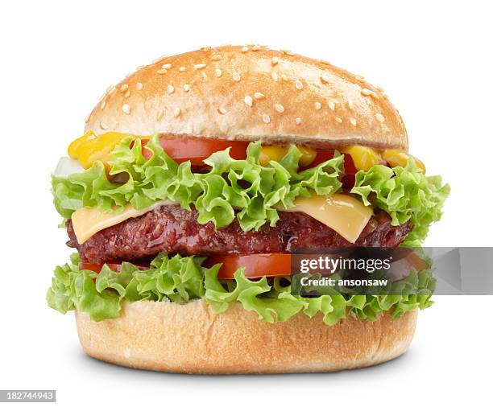

Food festival is a celebration that centers around food, often local produce, and aims to revitalize food systems and culture. These festivals typically bring communities together to celebrate harvests, appreciate diverse cuisines, and promote local businesses..
